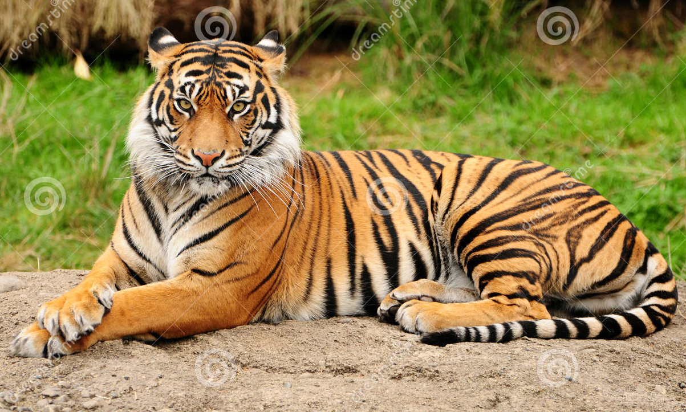

Tiger
The tiger (Panthera tigris) is the largest living cat species and a member of the genus Panthera. It is most recognisable for its dark vertical stripes on orange fur with a white underside. An apex predator, it primarily preys on ungulates such as deer and wild boar. It is territorial and generally a solitary but social predator, requiring large contiguous areas of habitat, which support its requirements for prey and rearing of its offspring. Tiger cubs stay with their mother for about two years, then become independent and leave their mother's home range to establish their own.
The tiger was first scientifically described in 1758 and once ranged widely from the Eastern Anatolia Region in the west to the Amur River basin in the east, and in the south from the foothills of the Himalayas to Bali in the Sunda Islands. Since the early 20th century, tiger populations have lost at least 93% of their historic range and have been extirpated from Western and Central Asia, the islands of Java and Bali, and in large areas of Southeast and South Asia and China. Today, the tiger's range is fragmented, stretching from Siberian temperate forests to subtropical and tropical forests on the Indian subcontinent, Indochina and Sumatra.
The tiger is listed as Endangered on the IUCN Red List. As of 2015, the global wild tiger population was estimated to number between 3,062 and 3,948 mature individuals, with most of the populations living in small isolated pockets. India currently hosts the largest tiger population. Major reasons for population decline are habitat destruction, habitat fragmentation and poaching. Tigers are also victims of human–wildlife conflict, particularly in range countries with a high human population density.